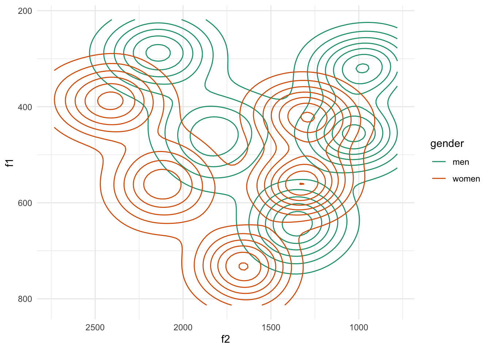
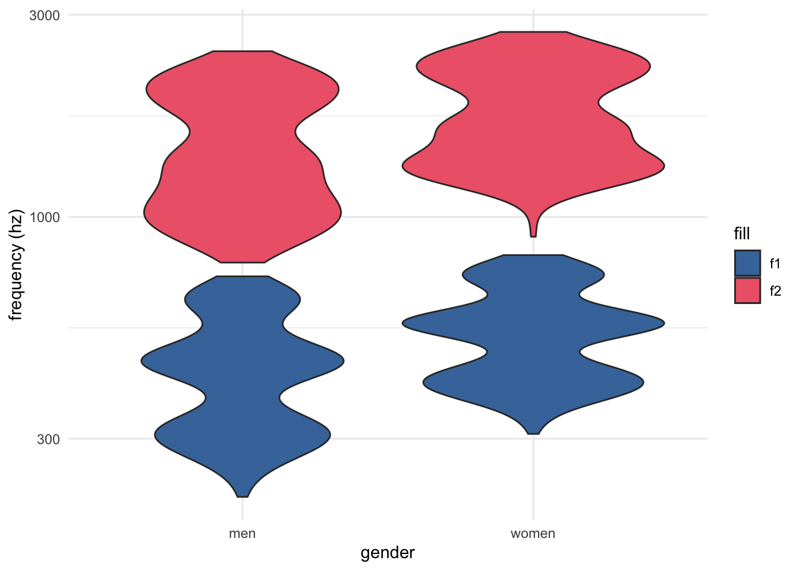

Setup and plot original data
tidy_vowels |>
ggplot(aes(f2, f1, color = gender)) +
stat_density2d()+
scale_x_continuous(trans = "reverse")+
scale_y_continuous(trans = "reverse")+
scale_color_brewer(palette = "Dark2")
Unnormalized vowels
tidy_vowels |>
ggplot(aes(x = gender))+
geom_violin(aes(y = f1, fill = "f1"))+
geom_violin(aes(y = f2, fill = "f2")) +
scale_y_continuous(trans = "log10")+
scale_fill_bright()+
labs(y = "frequency (hz)")
Normalizing
z-scoring a.k.a. “Lobanov”
Log-mean
Log-mean normalization, following Barreda (2021).
References
Barreda, Santiago. 2021. “Perceptual Validation of Vowel Normalization Methods for Variationist Research.” Language Variation and Change 33 (1): 27–53. https://doi.org/10.1017/S0954394521000016.
Reuse
CC-BY-SA 4.0